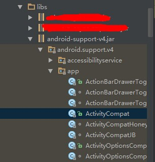
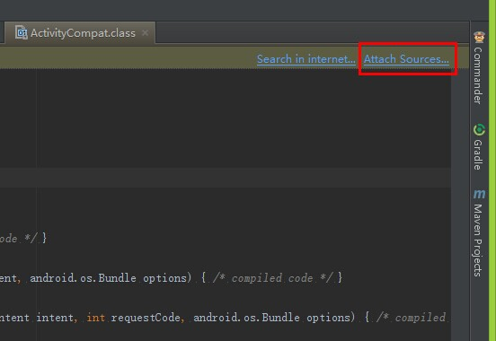
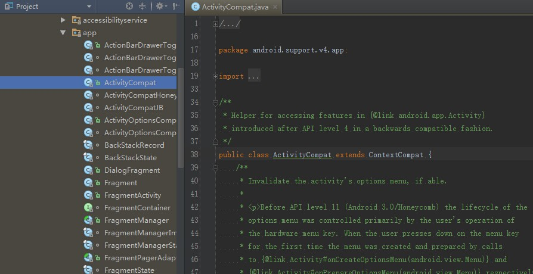

简单步骤
下面的步骤将介绍如何在Android Studio中为jar库绑定源码~
在
build.gradle中添加jar依赖：1234dependencies {compile fileTree(dir: 'libs', include: ['*.jar']) // 针对libs下的.jar库compile files('libs/xxxx.Final.jar') // 针对指定文件}Rebuild后点进jar库中的某个
*.class文件，然后看右上角（是不是发现了Attach Sources选项）：

根据2中的步骤选择
XX.source.jar即可绑定源码（或者选择source源码存放目录）

其他方式
除了上面的方法，还可以使用手动导入的方式：
（1）打开项目目录\.idea\libraries文件夹，找到XX_library_name.xml，我这里是android-support-v4.jar库所以对应是android_support_v4.xml
（2）添加以下片段即可，url指定source.jar地址或者目录地址。
若是*.jar，则按如下方式：
123<SOURCES><root url="jar://$PROJECT_DIR$/XXX_Project/sources/XXXX.Final-sources.jar!/" /></SOURCES>若是源码目录，则按如下方式：
123<SOURCES><root url="file://X:/XXX/android-sdk-windows/extras/android/support/v4/src/java" /></SOURCES>
同理，若是添加javadoc，添加<JAVADOC />标签即可！
关于android.jar源码绑定
一般在SDK Manager中勾选了source并下载完成后，会在android-sdk/sources/android-xx目录下生成源码，此时重启Android Studio即可自动完成源码绑定。
若还是没有生效，可以进入AS的配置目录下~/AndroidStudio2.3/options/修改jdk.table.xml这个文件，手动加上对应的sourcePath，如下所示：然后重启AS再试试。
同理，若是添加javadoc，添加<javadocPath />标签即可~